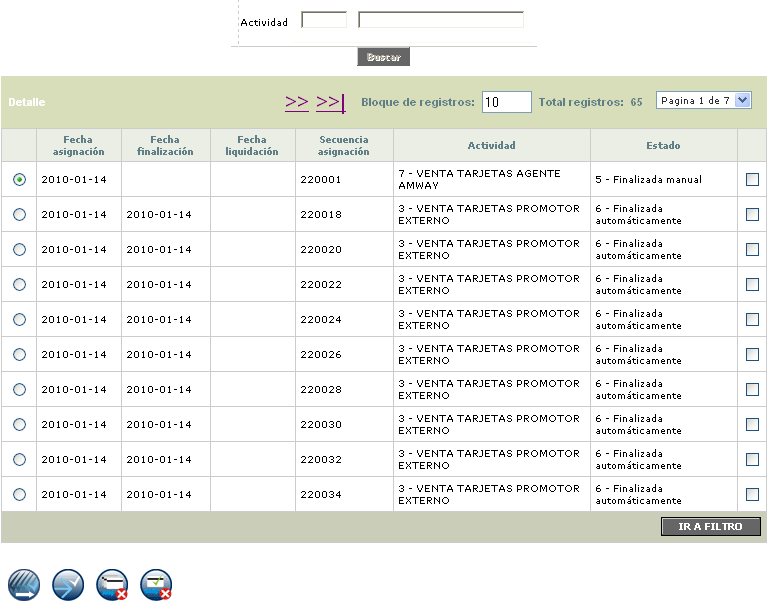

Actividades finalizadas |
A través de esta opción el sistema permite realizar la consulta detallada de aquellas actividades que ya han sido finalizadas.
El formulario cuenta con las opciones Detalle y un filtro que permite buscar a través de la Actividad.

Detalle: Si el usuario invoca la opción Detalle se despliega el siguiente formulario.

Generar liquidación: A través de estos botones, el sistema permite generar liquidación para todas las actividades o sólo para aquellas que hayan sido seleccionadas.